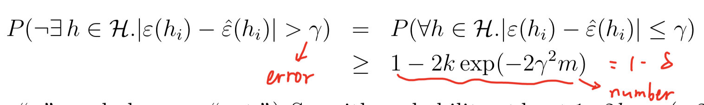

Bias/variance tradeoff / hypothesis class
concept
- Generalization error
- Measure of how accurately an algorithm is able to predict outcome values for previously unseen data.
- Bias
- High bias can cause an algorithm to miss the relevant relations between features and target outputs (underfitting).
- Model is too 'simple'
- Variance
- an error from sensitivity to small fluctuations in the training set. High variance can cause an algorithm to model the random noise) in the training data, rather than the intended outputs (overfitting).
- Model is too 'complex'
- 如何度量bias和variance最终决定了我们的模型选择
- Union bound
- Hoeffding inequality(Chernoff bound)
- 设观测变量独立同分布，且服从两点分布，参数为
- 也就是说，如果我们的样本数越来越大，则估计值会越来越接近真实值
- Expirical risk/error
- Empirical risk minimization (ERM)
- 由于我们只有样本，因此最直观的方式就是经验风险最小化：
- Hypothesis class
- Set of all classifiers over X (the domain of the inputs)
- 其实就是一种类型model的集合，例如线性模型，神经网络等等
- 因此，经验风险最小化实际上就是在Hypothesis class中，选择一个最好的：
finite hypothesis class
我们使用经验风险最小化来选择我们的模型，因此，最重要的两个问题是：
- 这个估计可靠吗？
- 这个估计对于generalization error的upper-bound是多少？
根据Chernoff bound我们可以得到：

也就是说，对于hypothesis class中的任何模型，使得其error小于的概率大于
那么，我们可以分别固定两个变量，求第三个变量需要满足的条件
- 可以发现，的数量越大，需要的样本量也越大，以log进行增长（增长的很慢）
- 样本量越大，error越小，同时，还可以证明，我们用经验风险最小化得到的model只比最优的model相差两个（需要在同样的hypothesis class中）
现在我们可以形式化的定义bias和generalization error（对于分类问题而言）：
其中，第一项可以认为是我们的bias：当我们的模型越来越复杂时（hypothesis class越来越大），则第一项会减小，而第二项为增加（也就是variance）
infinite hypothesis class
如果我们的假设空间中的参数有d个实数组成，那么在电脑中用double类型表示，需要64d个bits。因此，实际上计算机将连续的实树离散为个假设。根据我们之前的不到呢个好死，可以得到我们需要的样本数量为：
也就是说，我们需要的样本数量与假设空间中的参数个数基本上是线性关系。
we conclude that (for an algorithm that tries to minimize training error) the number of training examples needed is usually roughly linear in the number of parameters of .
ERM
对于经验风险最小化而言，如果是对于二分类问题，其损失函数是阶梯函数，不是凸函数，并不容易优化。
回想logistic regression，实际上其优化目标是最大化极大似然，也就是最小化负的log函数，这实际上可以看作是经验风险最小化的凸函数形式的近似。
同样，SVM的损失函数为hinge loss，也可也认为是经验风险最小化的近似。